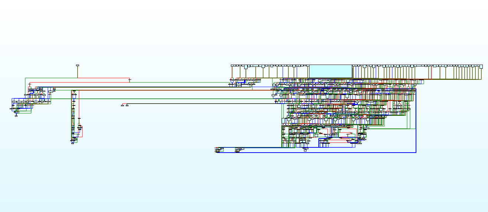

- glass
- baby_rc
- little_evil
- HMI
- gift
TODO: 研究gift
glass
安卓逆向，使用jeb打开，发现在java层仅进行了简单的输入，然后进入so层判断
用ida打开so层，直接搜索java，进入判断函数
下面的字符串应该是密钥
1 | qmemcpy(v6, "12345678", sizeof(v6)); |
然后调用了三个函数
1 | sub_FFC(v7, v6, v4); |
进入查看，第一个是RC4密钥初始化，第二个是RC4加密，第三个是对密文进行简单的运算
从字符串里拿密文，写脚本进行求解，先对简单运算进行反向运算，然后找个RC4密码的脚本，跑一下就可以找到flag
1 | cipher = [0xA3, 0x1A, 0xE3, 0x69, 0x2F, 0xBB, 0x1A, 0x84, 0x65, 0xC2, 0xAD, 0xAD, 0x9E, 0x96, 5, 2, 0x1F, 0x8E, 0x36, 0x4F, 0xE1, 0xEB, 0xAF, 0xF0, 0xEA, 0xC4, 0xA8, 0x2D, 0x42, 0xC7, 0x6E, 0x3F, 0xB0, 0xD3, 0xCC, 0x78, 0xF9, 0x98, 0x3F, 0] |
baby_bc
不知道bc文件是什么，用 file 命令查看，发现是 LLVM ir bitcode 文件，上网搜索，使用 clang -o baby_bc baby.bc 搞成 elf 文件
拖入ida进行查看
首先对输入进行判断，分析输入的应该是长度是25的字符串，每个字符都在 0-5 之间
要拿到flag需要通过两个验证函数
第一个函数是将输入填入到map中，map中非零位输入应该为0，零位的输入不能为0
第二个函数是对map进行验证，分析后发现总共进行了如下验证：
- 每行的数字不能相同
- 每列的数字不能相同
- 每行相邻两个数字的大小关系需要符合row矩阵的要求
- 每列相邻两个数字的大小关系需要符合col矩阵的要求
知道要求后直接上z3约束求解器拿flag
1 | from z3 import * |
最后把两个地方改成 0 就行了
little_evil
基本分析
直接用ida直接打开会看到一个叫做”squashfs”，而且和ruby有关，但比赛的时候没有多想，然后就走远了

放一张珍贵截图
后来得知正确方法需要先用binwalk分解一下，这里有个坑，需要自己手动装一个”squashfs”的插件
顺便补充一下什么是”squashfs”：基于Linux内核使用的压缩只读文件系统。难怪要用binwalk，沉思
利用输出去混淆
分解后翻一下目录，可以找到一个 out.rb 的文件
打开后发现是一个被严重混淆的脚本，大概长下面这样
1 | $l1Il=""; |
最后一个函数里本来只有一个 send 方法，这个方法是执行第一个参数的函数，后面的参数都是这个函数的变量
这里跟着学长学习了一个针对解释性语言混淆的办法，就是直接输出这个send中的变量
输出之后还是一个相似的脚本，简单换一下行，长这样：
1 | # eval |
一开始的 eval 就是 send 中调用的函数，可以分析出来后面的东西就是要用来执行的，因为这是解释性语言，直接输出就拿到源代码了
和刚才进行同样的操作，拿到第三份脚本
1 | begin $_=$$/$$;@_=$_+$_;$-_=$_-@_ |
这份脚本就很丑了，最后一长串的数字，让我自己来猜的话肯定会猜是一个虚拟机
然后一大堆 ? 一看就是 switch 语句，后来细看才发现全是三元运算符，但也是 switch 的作用
于是将指令部分翻译成 python（只是熟悉一点而已）
1 | if _[tmp_2] == '0': |
因为是补题，所以提前知道是 brainfuck 语言，但还是尝试自己逆了一下
- tmp_3 是指针，操作3和4对应了指针+1 -1(>和<)
- global_3 是指针指向的字节，操作0和1对应了字节的+1 -1(+和-)
- 操作2中含有获取输入，对应了获取输入操作(,)
- 操作7中含有<<，怀疑是输出，对应了输出操作(.)
- 5和6对应了跳转，猜测5是[，6是]
之后就可以找个脚本翻译 brainfuck 了
我先用 python 将其转为了正常的 brainfuck 语言
1 | finalop = '' |
然后找了个脚本，这是核心部分：
1 | int cur = 0; |
一开始随便找了个脚本就运行，然后尝试去看，但后来发现很多指针位置的变化，看着很累，于是让指针的变化在内部运行，对具体数做变化的时候直接打印指针的值就可以了
Brainfuck 代码阅读
接下来就是痛苦的 Brainfuck 代码阅读环节了，虽然代码已经有了最简单的美化，但看起来还是像混淆过的汇编。
自己做的时候是一点一点美化代码，然后阅读的。但最后找到验证函数才搞明白。
所以先去最下面找到验证函数，看到最下面有两个putchar，猜测就是通过验证了，于是找进入的条件
1 | a[2] = getchar(); |
进入的条件是要 a[2] > 0，网上看就知道需要让 a[1] > 0，所以在编辑器里选中一下，就能找到所有 a[1] 出现的地方（这就体现出这种输出方法的优势了）
然后发现 a[1] 会在一开始赋值为 1，但一旦进入 while(a[2]) 这种大循环，就会出现 a[1]=0 的赋值，所以我们的目标就是在进入循环前让 a[2]==0
查看一下从 getchar 到 while 之间的代码，把重复出现的 ++ 都合并一下
这里以第一次 getchar 的代码为例，（剩下几次形式几乎完全一致，就是参数有点小变化而已）
1 | a[2] = getchar(); |
美化一下：
1 | a[2] = getchar(); a[3] = 0; a[4] = 7; while (a[4]) { a[3] += 11 --a[4]; } // a[3] = a[4] * 11 = 77 a[2] -= a[3] while (a[2]) { a[4] = 0; a[5] = 0; a[1] = 0; a[2] = 0; } a[2] = 0; |
简单地说就是会生成一个数字，然后用 a[2] 去减，如果结果为 0，就通过验证了，对所有的输入都搞一次，就能拿到五个输入字符 M5Ya7
总结
做这道题的时候，最大的问题就是没有搜索足够的资料，如果第一步想出来的话的，以比赛的时间，应该还是有机会做出来这道题的，毕竟后续的工作都是体力活，一点一点做下去应该就差不多能出来了
不过不管怎么说，补题的过程还是学到了很多东西的，比如“病毒式”混淆可以直接用输出来解，brainfuck的小型解释器怎么看，以及最后直接输出索引地址，做题经验++
HMI
先说结论：屑题
参考了这篇博客：https://myts2.cn/2021/05/16/ciscn2021/
逆向分析
用 file 命令看一眼，发现全是 .NET，直接上 dnSpy
先搜索 CISCN 字符串，找到最后的验证和输出
1 | checked |
所以最后需要通过一个md5验证，然后往回找 combined 是什么，发现是从 text 赋值的
而具体赋值到哪里，则是由 num2 决定的， num2 是一串 41047 - 41054 的字符串
比赛的时候只知道这个是一个端口，但具体是什么没搞出来，疯狂往回找引用发现找不到东西，怀疑还是需要远程往里面打数据，因此尝试搭建GRFICS的平台（队内大佬找到的），最后熬不动放弃了
参考别人的wp之后发现需要使用 Modbus Slave 往里面打数据，开始补题
Modbus Slave调试
之前找到的 401** 原来就是 Modbus 的端口，所以只需要用 Modbus Slave 往相应端口添加数据就行
先直接运行找到粗略的范围（调试修改数据太慢了），目标就是让数字都变成白色
在粗查的时候就能发现小数点后有一些位置在 exe 界面是看不到的
明确范围后进 dnSpy 调试，总结出一个表格
| min | max | dif | combined | i | |||
|---|---|---|---|---|---|---|---|
| $41046$ | $52.8016$ | $17312$ | $52.8992$ | $17344$ | $0.00305$ | $0.00305$ | $2$ |
| $41047$ | $25.0002$ | $1634$ | $25.092$ | $1640$ | $0.0153$ | $0.0153$ | $1$ |
| $41048$ | $62.10105$ | $20361$ | $62.19865$ | $20393$ | $0.00305$ | $0.00305$ | $0$ |
| $41049$ | $406.6128$ | $26576$ | $406.6893$ | $26581$ | $0.0153$ | $0.0153$ | $3$ |
| $41050$ | $54.00025$ | $17705$ | $54.09785$ | $17737$ | $0.00305$ | $0.00305$ | $7$ |
| $41051$ | $158.0031$ | $10327$ | $158.0949$ | $10333$ | $0.0153$ | $0.0153$ | $6$ |
| $41052$ | $22.0027$ | $7214$ | $22.09725$ | $7245$ | $0.00305$ | $0.00305$ | $4$ |
| $41053$ | $13.1121$ | $857$ | $13.1886$ | $862$ | $0.0153$ | $0.0153$ | $5$ |
接下来在这一范围内进行爆破就好了
对范围做了个计算，我搞出来的是 2028571776，不知道为什么参考比我这个小一点
爆破
因为最后要算 md5，所以精度不能有问题，又因为爆破范围大概在 20 亿左右，所以速度也不能慢
于是决定先用python的Decimal来算小数，再用cpp求解
1 | from decimal import Decimal |
最后算出来的结尾会有0，手动去除一下就行
然后用cpp进行爆破，这里写的比较懒
1 |
|
md5是直接上网抄的，来源：https://blog.csdn.net/u012063703/article/details/49178349
最后的结果
1 | ... |
爆破出答案大概花了 $60\% \times 2640=26.4\min$
结论
这题难度不在于逆向，前期的基本分析以及后面需要打数据动调这些和逆向有关的操作，比赛的时候其实都想到了，但问题在于不知道还有 Modbus Slave 这种东西
所以全程都很迷茫，完全不知道该怎么做，官方的提示早上才放出来，那会都收工准备补觉了（一个小时的时间，找数据范围+写脚本+爆破，根本来不及好吧）
以及过程中的调数据就是无限二分，累的一批，这题说是 Misc 我都信
最后的爆破数据量也太大了，参考的博客用go跑了两小时，我这边用c++跑了半个小时，不过队友用c的多线程只跑了半分钟，看截图只爆破了 $2\%$ 就出结果了，应该是划分的位置正好在答案边上，有时间学习一下多线程
综上：屑题
gift
新版本的GO对magic number以及一些结构上都做了修改，所以老版本的符号表修复脚本就不能用了，好在免费的ida7.6正好支持GO的符号表恢复，可以直接做了。
主函数主要部分如下
1 | main_CISCN6666666(); |
开头的三个CISCN函数是简单的输出，中间生成空的slice然后扔到了wtf函数中，输出是根据索引，从qword_9239C0中选择一个字符。
尝试运行的时候发现运行时间很长，但在程序中没有看到延时的操作，那么这道题应该是一个耗时的算法。
观察发现 wtf 函数是一个递归函数，而 off_928230 中存的就是递归的深度。
尝试找规律，直接将深度patch成 1 到 0x20，运行一下。
得到如下结果
1 | Welcome to CISCN 2021! |
猜测最后的输出是有规律的
1 | cur_time = [ |
和最后的正确结果做个对比，发现一样。